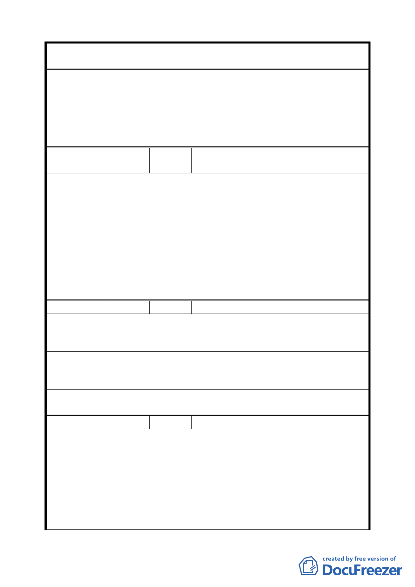

案 名 臺北市文山區都市計畫通盤檢討（細部計畫）案
議，切勿輕言推翻。
專案小組
審 查 結 論 同編號 24。
（94.12.21）
委員會議
決議
同編號 24。
編
號 26
陳情人
祭祀公業周振西記
（09430152600）
周武雄
陳情理由
（興隆）
原主要計畫綜理表編號 36。
建議位置：文山區興隆段三小段 558、558-2、558-3、558-4
地號。
建議辦法
請依 87.1.12 北市文建 8720087300 號函，興隆段三小段 58
等地號變更為萬盛公園用地協調會議紀錄辦理。
專 案 小 組 一、 請發展局查核陳情地號之同意書後，同意納入公園用地
審查結論
範圍。
（ 9 4 . 7 . 7 ） 二、 558-2 地號維持原道路用地。
委員會議
決議
依專案小組審查結論辦理。
編 號 27 陳情人 楊勝原（09430333400）
陳情理由
（木柵）
原主要計畫綜理表編號 38。
建 議 辦 法 樟新市場已不開闢，建議依現況使用變更為停車場用地。
專案小組
審 查 結 論 樟新市場用地變更為停車場用地。
(94.12.21)
委員會議
決議
依專案小組審查結論辦理。
編 號 28 陳情人 楊如松（09530075700、09530273500）
建議位置：文山區興隆段二小段 166、167、168、169、174、
175、176、177、178、180、181、183、187、188、189、189-1、
190-2 等 17 筆地號。
陳 情 理 由 一、 本土地位於「修訂景美區辛亥路、興隆路、萬盛街保護
（木柵）
區界線所圍地區細部計畫（第二次通盤檢討）案」範圍
內，原屬住二，經查周遭住宅區及同街廓其他住宅區均
屬住三，且均已興建完成，僅民等所有土地為住二，實
不合理。
四一